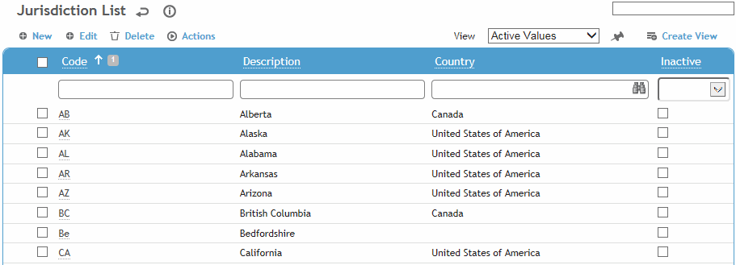
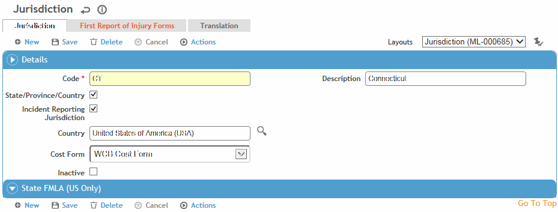

This table is used to define the geographic divisions for a country, e.g. state, province, county, etc., the factors to be used to track State FMLA absences, and the FROI form(s) to be used for incident reporting. Note that this is different from the IHJurisdiction table, which contains the code and description of jurisdictions for IH use.
To filter the list of records, enter a few characters in one or more of the fields at the top followed by an asterisk, then press Enter.

Click a link to edit, or click New.

Enter the Code and Description, and if applicable select the checkbox to indicate if this is a State/Province/County (if selected, this record will be included in all State lists throughout the application).
If this is an Incident Reporting Jurisdiction, select the checkbox. A new tab appears (First Report of Injury Forms) where you can select the forms (from the PDFForm look-up table) you want to use for this jurisdiction, as well as the default FROI/Employer’s Report form. The form(s) identified on this tab are listed in the Forms tab in the Incident module.
If you are mapping a form for the % jurisdiction, you will only be able to select Incident forms from the PDFForm look up table; if you are mapping a form for a specific jurisdiction, you will only be able to select InjuryIllness forms.
Select the Country and the Cost Form (Reserves Cost Form or WCB Cost Form).
When a user opens a Jurisdiction picklist on a record, Cority filters the options according to the country selected on the record. If there is no selected country, Cority uses the country defined in the user’s system settings.
US only: Indicate the time period to be used in State FMLA calculations (past 12 months or calendar year), and enter the number of hours per day and the maximum number of days allowed.
Click Save.